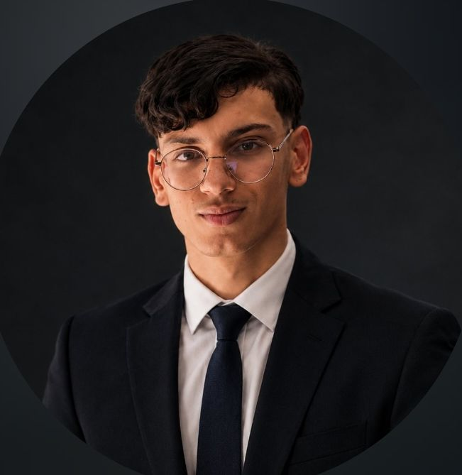

17 Y/O • FOUNDER
LAHOUCINE JAKOUM
Cybersecurity Analyst & Full-Stack Developer
> Founder of ATLAS-GUARD (Enterprise Security Autopilot for SMEs)[cite: 1, 16].
> Specialized in Detection Engineering, SIEM/Wazuh, Python Automation & AI Threat Intelligence.
> Certified by Cisco Networking Academy & Registered ISC2 Candidate[cite: 14, 15].
⚡ Flagship Project & Platforms
🏆 Certifications & Expertise
Status ISC2 Candidate
Core Focus Ethical Hacking & SIEM
Cisco Academy Ethical Hacker & Cyber Threat
Automation Python, FastAPI & ML
🔗 Professional Connections